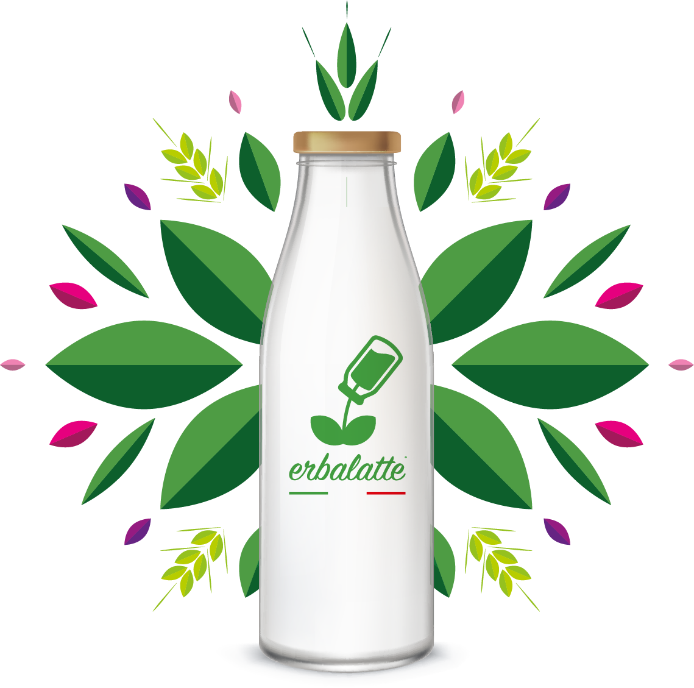
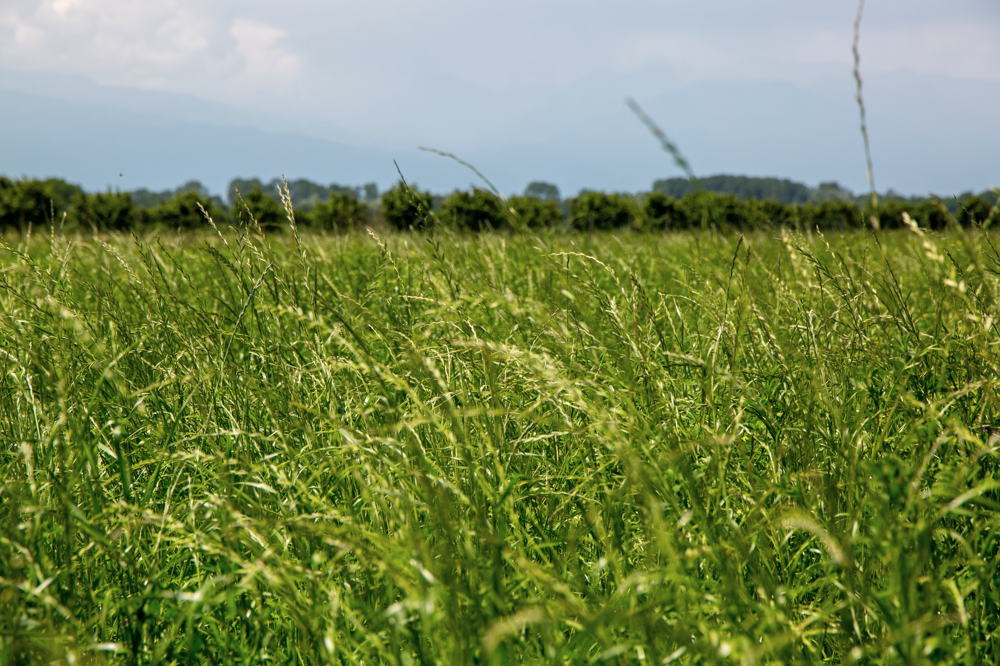

Sano, dolce e digeribile.
Con più proteine e più vitamine. Le nostre frisone mangiano l'erba e i fieni dei nostri prati, coltivati senza concimi chimici né pesticidi.


I nostri prati polifiti, Monasterolo di SaviglianoSi chiama Erbalatte perché
Le nostre mucche si nutrono di erba, fieni e cereali prodotti in azienda, senza concimi chimici, fitofarmaci e pesticidi sui prati.
Il risultato si sente: un latte delicato, dolce e profumato. E si misura: le analisi delle Università di Torino e di Pisa hanno trovato più proteine, più vitamina A e più vitamina E.
- Il primo latte certificato da Agricoltura Simbiotica
- No OGM, no insilati di mais
- Sesta generazione di allevatori, dal 2016 con l'Università di Torino
Dal prato al tuo bicchiere
Segui il viaggio del nostro latte in 3D: dall'erba che cresce fino alla confezione che arriva a casa tua.
Scegli il tuo Erbalatte
In casse da 12 litri, a lunga conservazione. Più casse ordini, meno paghi al litro.
Scelto da chi il latte lo lavora
La dolcezza del latte, rotonda e morbida, è quella del latte di una volta, che riportiamo nei nostri gelati.
Dei nostri cappuccini noterete la crema: deliziosa, soffice e montata alla perfezione.
Erbalatte è diventato per noi il latte principale, perché non riusciamo ad usarne altro.
Ogni giorno usiamo Erbalatte per preparare il "formaggio del pastore": serve un latte di altissima qualità.
I clienti notano la differenza, nella digeribilità e nel gusto.
Vuoi provare Erbalatte?
Ordina online e ricevilo direttamente a casa con corriere espresso. La spedizione è sempre gratuita.